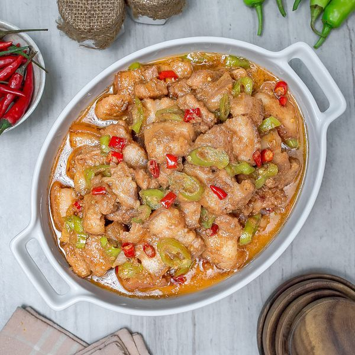
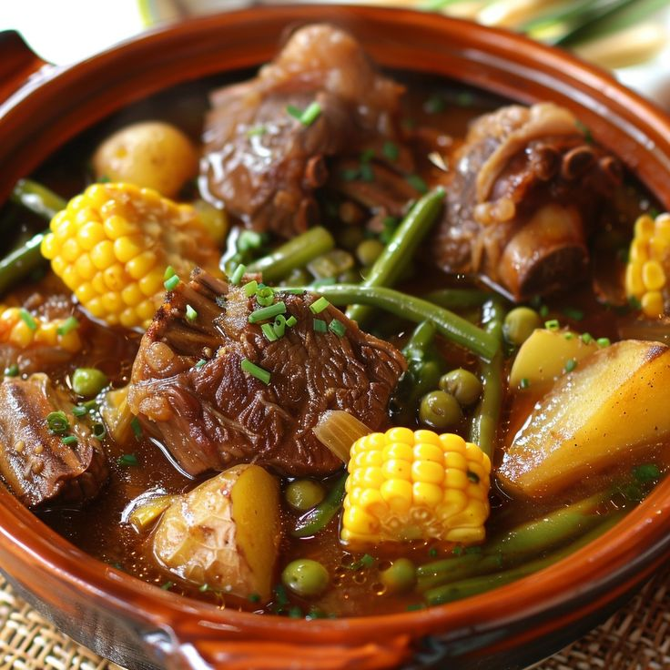
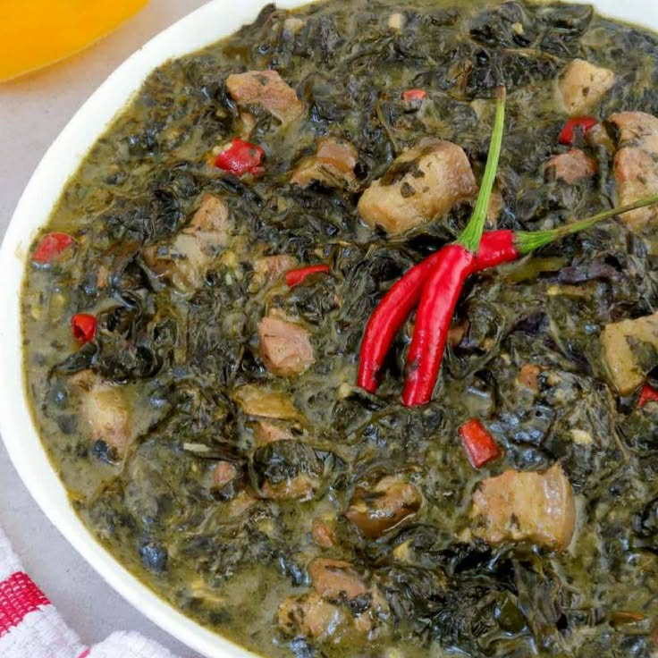
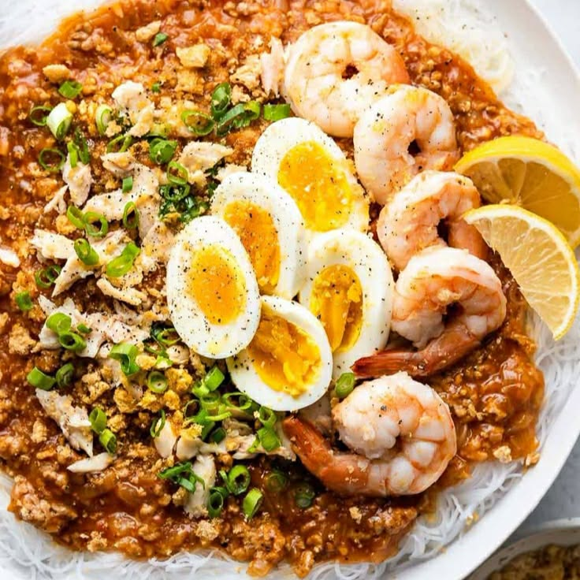
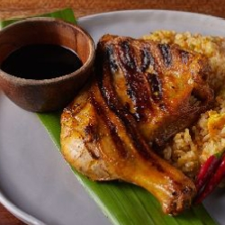
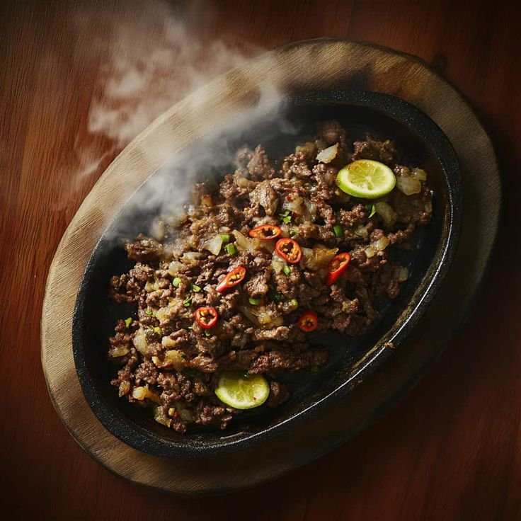

a popular Filipino stew from the Bicol region, made with
pork, coconut milk and a generous amount
of chili peppers.

a traditional Filipino soup made with beef shanks and bone
marrow, slow-simmered to create a rich,
flavorful broth

a spicy and creamy Filipino dish made of taro (gabi) leaves,
typically dried, cooked in thick
coconut milk with chili
peppers, and often includes meat like pork belly or seafood.

a popular Filipino noodle dish featuring thin rice noodles covered
in a savory, orange-hued sauce
made from shrimp and pork broth,
flavored with annatto (achuete).

means "char-grilled" or "roasted," specifically referring to a
Filipino dish marinated in a
mixture of ingredients like calamansi,
vinegar, and annatto oil, and then grilled over hot
coals.

a popular Filipino dish made from chopped parts of a pig's
head and liver, traditionally seasoned
with onions, chili
peppers, and calamansi.